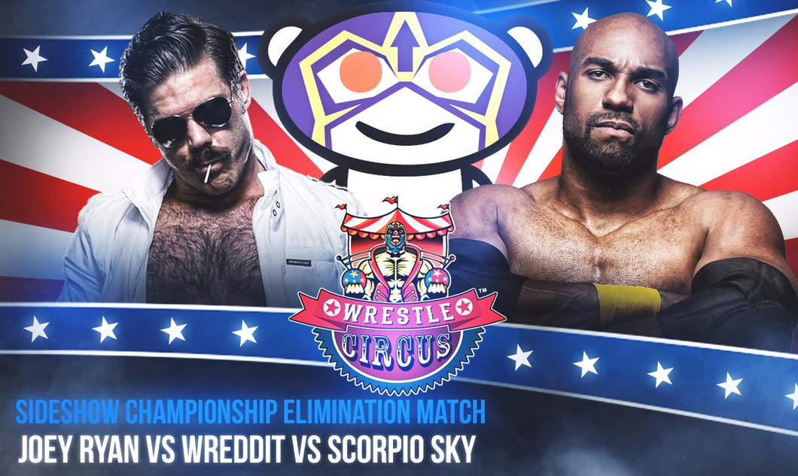

MotoPark NZ
As an interactive web application, MotoPark helps motorcycle riders in New Zealand find parks in their city close to their destination.
L2P.Games
Learn2Play is a curated hub for video guides for video games that provides convenient searching and filtering options for gamers of all skill levels.
PoDOMaL
Developed as my BCMS(Hons) project, PoDOMaL is a mathematical learning tool aimed at primary school aged children.
Locatio (GovHack 2016)
Locatio enhances online property listings with local crime statistics, demographics and more, letting you choose a home with peace of mind.
NautDrafter
NautDrafter is a desktop application for drafting teams for the multiplayer online battle arena game Awesomenauts.
B.E.R.G.S
Survive the hordes of zombies in this unique new mobile game. Scan barcodes to gain special abilities and boost your chance of survival!
Digital Journalist (NZPWI)
2015 - Current
I write opinion articles for New Zealand's pro-wrestling news source and contribute to the various other sections of the website.
Seasonal Assistant (UoW)
2015 - 2016
At the University of Waikato I was selected for the position to mark assignments, supervise tests and grade labs for a computer science course.
Radio Host (FreeFM)
2013 - Current
I host two radio shows and am responsible for organising, recording, promoting and editing the audio of each show on a weekly basis.

WrestleCircus Sideshow Champion
Along with ~190,773 other members of r/SquaredCircle, I became co-champion when Jervis Cottonbelly submitted to us.
WWE Greatest Fan NZ Champion
At the WWE Live event in Auckland I was crowned the inaugural (and only) WWE Greatest Fan NZ Champion by WWE Superstars, The New Day.
Black Belt in Martial Arts
Starting at the age of 6 and training for a total of 9 years, I finally earned my black belt at Incorporated Martial Arts in 2005.